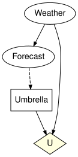

Open influence diagrams and composition
Simon Frost
- Overview
- Setup
- Splitting the umbrella problem
- The typed-interface rule
- Composing the umbrella problem back
- Semantics for a fixed strategy: reward kernels
- A first look at optimisation
- Summary
- References
Overview
An influence diagram adds decisions and utilities to a Bayesian network (Howard and Matheson 2005): a decision is a variable whose value is chosen by a policy that reads the decision’s information set, and the utilities score the outcome. An open influence diagram has an interface as well. Some variables are inputs, provided by the environment, and some are outputs, offered to it. As for open Bayesian networks (Fong 2012), the interface is a structured cospan (Baez and Courser 2020): the apex is the influence diagram, the two feet are VariableSpaces, and composition glues the outputs of one diagram to the inputs of the next by a pushout.
A decision problem needs one more thing at the boundary. A later decision may read a variable that crosses the interface only if that variable is remembered information, not hidden state. So every interface variable carries an observability flag, :observed or :hidden, and two interfaces match only if their flags do. This vignette splits the umbrella problem into a chance component and a decision component, shows what the typed-interface rule refuses, composes the pieces back with compose, glue, otimes and oapply, and checks numerically that the semantics, a reward kernel for each fixed strategy, sends composition to composition.
Setup
The umbrella problem has a weather variable, a forecast that depends on it, and a decision, whether to take the umbrella, made on the forecast. The utility U scores the weather and the decision.
using CategoricalInfluenceDiagrams
m = umbrella_model()
umbrella = syntax(m)
(variables = variable_names(umbrella), decisions = decision_names(umbrella),
information = information_names(umbrella, :Umbrella), utilities = utility_names(umbrella))(variables = [:Weather, :Forecast, :Umbrella], decisions = [:Umbrella], information = [:Forecast], utilities = [:U])to_graphviz(umbrella; states = false)
Splitting the umbrella problem
Cut the diagram between the forecast and the decision. The chance component generates Weather and Forecast and offers both; the decision component takes both as inputs, holds the decision and the utility. In the decision component neither input has a mechanism (closed = false allows that).
chance_diagram = influence_diagram(:Weather => [:sunny, :rainy],
:Forecast => [:sunny, :cloudy, :rainy];
mechanisms = [:Weather => (), :Forecast => :Weather],
closed = false)
decide_diagram = influence_diagram(:Weather => [:sunny, :rainy],
:Forecast => [:sunny, :cloudy, :rainy],
:Umbrella => [:take, :leave];
decisions = [:Umbrella => :Forecast],
utilities = [:U => (:Weather, :Umbrella)],
closed = false)
nothing # hideOpen names the interface, and its keyword observed names the interface variables a decision may read. The weather crosses the boundary because the utility needs it, but no one sees it before deciding: it stays hidden. The forecast is observed.
A = Open(chance_diagram; outputs = [:Weather, :Forecast], observed = [:Forecast])
B = Open(decide_diagram; inputs = [:Weather, :Forecast], observed = [:Forecast])
println(A)
println(B)OpenInfluenceDiagram(2 variables, 2 mechanisms, 0 decisions, 0 utilities; Symbol[] -> [:Weather, :Forecast!])
OpenInfluenceDiagram(3 variables, 0 mechanisms, 1 decisions, 1 utilities; [:Weather, :Forecast!] -> Symbol[])An observed variable is printed with a !. The flags are part of the interface:
output_observability(A), input_observability(B), observed_inputs(B)([:hidden, :observed], [:hidden, :observed], [:Forecast])dom and codom return the interfaces as objects of the category, a VariableSpace with one flag per variable:
codom(A) == dom(B)trueThe default is that everything is hidden. It is the conservative choice: an interface carries information only where it says so. An open Bayesian network embeds as an open influence diagram with no decisions and every interface variable hidden:
bn_piece = Open(bayesnet(:Weather => [:sunny, :rainy],
:Forecast => [:sunny, :cloudy, :rainy];
mechanisms = [:Weather => (), :Forecast => :Weather]);
outputs = [:Weather, :Forecast])
embedded = OpenInfluenceDiagram(bn_piece)
output_observability(embedded)2-element Vector{Symbol}:
:hidden
:hiddenThe typed-interface rule
The typed-interface rule of open Bayesian networks extends to decisions and utilities. Every variable has at most one generator, a chance mechanism or a decision; an input has no generator in the apex; a decision reads only internal variables or observed inputs; a utility may read any variable of the apex; the causal-plus-information graph is acyclic; and composition preserves no-forgetting. Open checks the rule and throws the first violation as a typed error.
A decision that reads a hidden input violates rule 3. Declaring the forecast hidden leaves the umbrella decision reading a variable that, across the boundary, no one has seen:
try
Open(decide_diagram; inputs = [:Weather, :Forecast])
catch e
sprint(showerror, e)
end"DiagramInterfaceError: rule 3 (a decision reads only internal or observed input-foot variables) is violated: decision :Umbrella has the hidden input :Forecast in its information set; declare it observed or remove the arc"An input that has a mechanism violates rule 2: the weather would then be generated twice once the components are glued.
try
Open(chance_diagram; inputs = [:Weather], outputs = [:Forecast])
catch e
sprint(showerror, e)
end"DiagramInterfaceError: rule 2 (an input-foot variable has no generator in the apex) is violated: input :Weather is generated by the mechanism :Weather_mechanism"A variable without a generator must be an input, as for an open network. Here the weather has no mechanism in the decision component and is left off the interface:
try
Open(decide_diagram; inputs = [:Forecast], observed = [:Forecast])
catch e
sprint(showerror, e)
end"InterfaceError: rule 3 (every mechanism-free apex variable is an input) is violated by variable(s) Weather (ids 1)"The flags are checked at composition as well. A chance component that hides the forecast does not match a decision component that expects to observe it, even though the names and states agree:
A_hidden = Open(chance_diagram; outputs = [:Weather, :Forecast])
try
compose(A_hidden, B)
catch e
sprint(showerror, e)
end"ObservabilityMismatchError: compose: outputs(A) vs inputs(B): variable :Forecast at position 2 is :hidden on the left but :observed on the right; glued interface variables must agree on observability"Rule 6 concerns composites. In the oil wildcatter’s problem a test decision comes before a drilling decision. Split between them, each component has no-forgetting on its own, but a drilling decision that reads the test result and not whether a test was made forgets an earlier decision once the two are composed:
test_part = Open(influence_diagram(:Oil => [:dry, :wet], :Test => [:test, :skip],
:Result => [:pos, :neg, :none];
mechanisms = [:Oil => (), :Result => (:Oil, :Test)],
decisions = [:Test => Symbol[]],
utilities = [:TestCost => :Test], closed = false);
outputs = [:Oil, :Test, :Result], observed = [:Test, :Result])
drill_diagram(information) =
influence_diagram(:Oil => [:dry, :wet], :Test => [:test, :skip],
:Result => [:pos, :neg, :none], :Drill => [:drill, :dont];
decisions = [:Drill => information],
utilities = [:Payoff => (:Oil, :Drill)], closed = false)
forgetful = Open(drill_diagram((:Result,)); inputs = [:Oil, :Test, :Result],
observed = [:Test, :Result])
try
compose(test_part, forgetful)
catch e
sprint(showerror, e)
end"NoForgettingError: the components have no-forgetting but the composite does not: decision :Drill comes after decision :Test but does not know :Test (the information arc :Test -> :Drill is missing); pass :Test across the boundary as an observed variable and add it to the information set of :Drill, or compose with `no_forgetting = false`"With the test passed on as an observed variable and read by the drilling decision, the composite is the oil wildcatter’s diagram:
drill_part = Open(drill_diagram((:Test, :Result)); inputs = [:Oil, :Test, :Result],
observed = [:Test, :Result])
is_isomorphic(apex(compose(test_part, drill_part)), two_stage_diagram())trueComposing the umbrella problem back
compose (or ⋅) is strict sequential composition: the outputs of the first diagram must equal the inputs of the second, position by position, with the same states and the same flags. The composite is the pushout of the two apexes along the shared foot. Here it has no interface left, and it is the umbrella diagram again:
C = compose(A, B)
println(C)
is_isomorphic(apex(C), umbrella_diagram()), A ⋅ B == COpenInfluenceDiagram(3 variables, 2 mechanisms, 1 decisions, 1 utilities; Symbol[] -> Symbol[])
(true, true)glue composes along explicit pairs of names, which may differ (the glued variable keeps its name from the first diagram), and leaves the rest of the interface open. Renaming the decision component’s forecast to Signal and gluing along both variables gives the umbrella diagram again; gluing only the forecast, with the decision component’s weather renamed Season, leaves the two weather variables on the interface:
B_signal = Open(rename_variable(decide_diagram, :Forecast => :Signal);
inputs = [:Weather, :Signal], observed = [:Signal])
G = glue(A, B_signal; along = [:Weather => :Weather, :Forecast => :Signal])
B_season = Open(rename_variable(decide_diagram, :Weather => :Season);
inputs = [:Season, :Forecast], observed = [:Forecast])
H = glue(A, B_season; along = [:Forecast => :Forecast])
println(H)
is_isomorphic(apex(G), umbrella_diagram())OpenInfluenceDiagram(4 variables, 2 mechanisms, 1 decisions, 1 utilities; [:Season] -> [:Weather])
trueotimes (or ⊗) places diagrams side by side, concatenating the interfaces and their flags:
T = A ⊗ B
println(T)
dom(T) == dom(A) ⊗ dom(B), codom(T) == codom(A) ⊗ codom(B)OpenInfluenceDiagram(5 variables, 2 mechanisms, 1 decisions, 1 utilities; [:Weather, :Forecast!] -> [:Weather, :Forecast!])
(true, true)oapply composes along an undirected wiring diagram written with @relation. Each box receives a diagram, its ports are the interface variables (inputs first), and the interfaces meeting at a junction are compared, flags included, before the colimit is taken:
uwd = @relation () begin
chance(weather, forecast)
decide(weather, forecast)
end
O = oapply(uwd, Dict(:chance => A, :decide => B))
is_isomorphic(apex(O), umbrella_diagram())trueThe identity on an interface is the diagram that holds the interface’s variables and nothing else; composing with it changes nothing up to isomorphism:
is_isomorphic(apex(compose(A, id(codom(A)))), apex(A))trueSemantics for a fixed strategy: reward kernels
Fix a deterministic strategy. An open diagram X → Y then denotes a reward kernel (K, W): K(y | x) is the probability of reaching the output state y from the input state x, and W(y, x) the expected reward earned on the way, weighted by the probability of reaching y. Reward kernels compose by (K₁, W₁) ; (K₂, W₂) = (K₁K₂, W₁K₂ + K₁W₂): the reward of the composite is what the first component earns, carried forward by the second component’s kernel, plus what the second earns from where the first left off. This is kernel composition over the expectation semiring (p, r)·(q, s) = (pq, ps + rq).
interpret computes the reward kernel of an open diagram from the tables, which it looks up by kernel reference or by variable name, and a strategy. The chance component has no decision, so its strategy is empty, and no utility, so its reward is zero:
ks = Dict(x => kernel(m, x) for x in (:Weather, :Forecast))
us = bound_utilities(m)
rA = interpret(A, ks, us, Strategy())
println(rA)
kernel_matrix(kernel(rA)), reward_matrix(rA)RewardKernel(Symbol[] → [:Weather, :Forecast])
([0.48999999999999994; 0.045; … ; 0.06999999999999999; 0.18;;], [0.0; 0.0; … ; 0.0; 0.0;;])The decision component, under the strategy that takes the umbrella only on a rainy forecast, is a reward kernel from the six joint states of (Weather, Forecast) to the empty interface: the probability part discards its input, and the reward part is the utility of the weather and of the action the policy picks for the forecast.
σ = Strategy(:Umbrella => deterministic_policy(m, :Umbrella, [:leave, :leave, :take]))
rB = interpret(B, ks, us, σ)
println(rB)
reward_matrix(rB)RewardKernel([:Weather, :Forecast] → Symbol[])
1×6 Matrix{Float64}:
100.0 0.0 100.0 0.0 20.0 70.0Their composite is a reward kernel from the empty interface to itself: probability one, and a reward equal to the expected utility of the strategy.
r = compose(rA, rB)
(probability = only(kernel_matrix(kernel(r))), reward = reward(r)[],
expected_utility = expected_utility(m, σ))(probability = 0.9999999999999998, reward = 76.99999999999999, expected_utility = 76.99999999999999)Functoriality, checked numerically
Functoriality says that interpreting the composite gives the composite of the interpretations. The check runs over every deterministic strategy of the umbrella decision, eight in all (a choice of action for each of the three forecasts), which all_deterministic_strategies lists from the decision component’s apex. For each, the reward kernel of compose(A, B) is compared with the composite of the two reward kernels, and its reward with the expected utility that InfluenceDiagrams.jl computes on the closed composite, instantiated as an ordinary model:
strategies = all_deterministic_strategies(apex(B))
closed_model = bind_utility(bind_kernel(InfluenceDiagramModel(apex(C)),
[x => ks[x] for x in (:Weather, :Forecast)]),
:U => us[:U])
checks = map(strategies) do τ
whole = interpret(C, ks, us, τ)
(actions = Tuple(policy_table(τ[:Umbrella])),
functorial = whole ≈ compose(rA, interpret(B, ks, us, τ)),
eu = reward(whole)[],
oracle = expected_utility(closed_model, τ))
end
[(actions = c.actions, eu = round(c.eu; digits = 2)) for c in checks]8-element Vector{@NamedTuple{actions::Tuple{Symbol, Symbol, Symbol}, eu::Float64}}:
(actions = (:take, :take, :take), eu = 35.0)
(actions = (:leave, :take, :take), eu = 71.05)
(actions = (:take, :leave, :take), eu = 40.95)
(actions = (:leave, :leave, :take), eu = 77.0)
(actions = (:take, :take, :leave), eu = 28.0)
(actions = (:leave, :take, :leave), eu = 64.05)
(actions = (:take, :leave, :leave), eu = 33.95)
(actions = (:leave, :leave, :leave), eu = 70.0)Every strategy passes both checks:
all(c -> c.functorial && c.eu ≈ c.oracle, checks)trueThe tensor is preserved too: the reward kernel of A ⊗ B is the tensor of the two, (K₁ ⊗ K₂, W₁ ⊗ K₂ + K₁ ⊗ W₂).
interpret(A ⊗ B, ks, us, σ) ≈ otimes(rA, rB)trueSo is gluing, which is serial composition along part of an interface, and oapply, which builds the same pushout from a wiring diagram:
interpret(G, ks, us, σ) ≈ r, interpret(O, ks, us, σ) ≈ r(true, true)A first look at optimisation
The closed composite is an ordinary influence diagram, so the solvers of InfluenceDiagrams.jl apply to it. optimize hands it to them:
sol = optimize(C, ks, us)
sol.expected_utility, policy_table(sol.strategy[:Umbrella])(77.00000000000001, [:leave, :leave, :take])The open decision component has no expected utility of its own: it has one only in a context, a law on its inputs and a value for its outputs. boundary_law gives the joint law of (Weather, Forecast) that the chance component induces, and against it contextual_optimize finds the same optimum:
ν = boundary_law(A, ks, us, Strategy())
local_sol = contextual_optimize(B, ks, us; prior = ν)
local_sol.expected_utility ≈ sol.expected_utility, local_sol.strategy == sol.strategy(true, true)That optimising a component against the context its neighbours induce recovers the optimum of the whole, while optimising it against any other context need not, is the subject of the third vignette, Why optimisation does not compose.
Summary
An open influence diagram is a structured cospan of influence diagrams whose interface variables are flagged observed or hidden. The typed-interface rule refuses an input with a generator, a free variable off the interface, a decision that reads a hidden input, and a composite that forgets an earlier decision; glued interfaces must agree on observability as well as on names and states. compose, glue, otimes and oapply are pushouts and coproducts of ACSets with the rule checked again on the result. For a fixed strategy, interpret sends each of them to the corresponding operation on reward kernels, and on a closed composite the reward is the expected utility of the instantiated diagram. The next vignette, Composing a management decision with a zoo network, applies the same constructions to an ecological network from the model zoo.
References
Baez, John C., and Kenny Courser. 2020. “Structured Cospans.” Theory and Applications of Categories 35 (48): 1771–822.
Fong, Brendan. 2012. Causal Theories: A Categorical Perspective on Bayesian Networks. https://arxiv.org/abs/1301.6201.
Howard, Ronald A., and James E. Matheson. 2005. “Influence Diagrams.” Decision Analysis 2 (3): 127–43. https://doi.org/10.1287/deca.1050.0020.